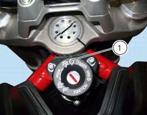
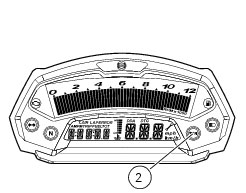
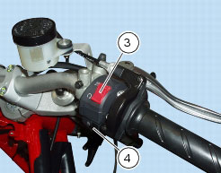

2 -
Starting - Engine warmup
Starting the engine
This motorcycle is equipped with an automatic starter (stepper motor). This allows automation of the engine warmup procedure.
Refer to Sect. M 3,
Stepper motor
, for details of stepper motor operation.
Move
the ignition switch to (1).

Make sure both the green light
N
and the red light (2) on the instrument panel come on (Sect. P 7,
Instrument panel system
), then press the starter button. Allow the engine to start on its own, without turning the throttle twistgrip.
Important
The oil pressure light (2) should go out a few seconds after the engine has started. If the light stays on, stop the engine and check
the oil level (Sect. P 7,
Instrument panel system
).
Never start the engine when the oil pressure is too low.

Check that the stop switch (3) is positioned to (RUN), then press the starter button (4).

Important
Do not run the engine at high speed when cold. Allow some time for the oil to warm up and reach all points that need lubricating.
Warning
The engine can be started with the sidestand down and the gearbox in neutral. When starting the engine with a gear engaged,
pull in the clutch lever (in this case the side stand must be in the raised position).